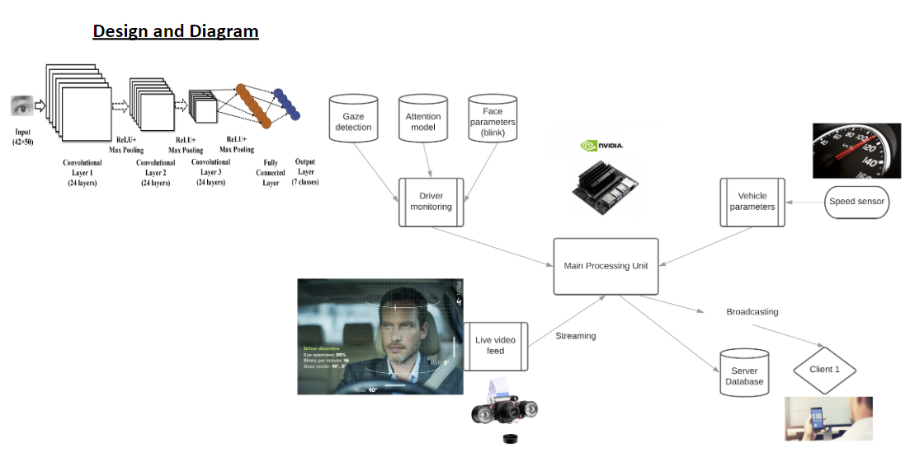

A driving assistance module powered by the Raspberry PI - monitors driver activities remotely using computer vision algorithms.

February, 2022
We benchmarked SOTA CNN models for emotion recognition in the wild task. [GitHub Repository]
Read moreApril, 2021
We complied a dataset for emotion recognition in the wild task. [Kaggle Competition]
Read moreFunding
We are grateful to ICT Division Bangladesh for funding this project. [Research Funds]
Read more